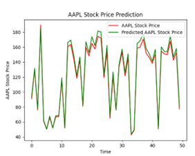
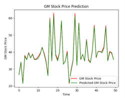
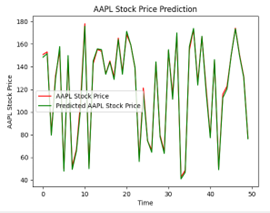

5 Results
5.1 Model Performance
To check our model’s performance on unseen data we pass through our testing subset ‘LSTM_Xtest’ which is a 2-dimensional array consisting of 252 rows by 4 columns and our testing y set which is a 1- dimensional array consisting of 252 rows by 1 column. We define a the loss variable the same as we did during the model building phase, where we selected MSE. After running the predictions on the test set, we get a loss[MSE] of 5.2.
Figure 12: Final model result
To get a visual representation of the predicted values compared to the actual values, we define a predictions variable which uses the LSTM models predict function and pass that to the LSTM_Xtest array. We plot in a line graph the first 50 (Figure 13) data points and the last 50 data points (Figure 14) to get a sense of how the model predicted at both ends of the time series. We also chose to do this because it would be difficult to plot all 252 test observations on one graph. The red line on each graph represents the actual stock price and the green line represents the predicted stock price.
Figure 13: Actual Price vs Predicted Price for Apple; first 50 days
Figure 14: Actual Price vs Predicted Price for Apple; last 50 days
As can be seen in both graphs, the model does exceptionally well at predicting the closing price.
5.1.1 Results from other days
We also wanted to evaluate how well our model would predict Apple’s stock price outside the 5 years of data we used in our original data set ending on 10/31/2023. To do this, we randomly selected 2 dates not in that original dataset: 11/03/23 and 11/07/2023. We created a 2 by 4 array with the Open, High, Low, and Volume values for each day and passed in the array to the models predict method.
Figure 15: Array containing features for 11/03/23 and 11/07/23
Table 4: Prediction results from the two arrays
We can see that the model was also able to accurately predict days that were not in our original dataset used to build the model.
5.1.2 Results on other stocks
All things being the equal for our model architecture, we wanted to test the predictive performance of an LSTM Deep Neural network on another stock. For this purpose, we picked General Motors (GM). We picked this stock because it had different price trends and volatility than Apple, giving us a good comparison.The model summary is the same as compared to Apple because we are using the same five years of data and the same train/test split, except with the values representing the GM stock instead of Apple.
Figure 16: LSTM model summary for General Motors
At the first epoch, we have a loss[MSE] of 1128.90 (Figure 17). By the 150th epoch the loss[MSE] drops to 0.78 (Figure 18) on our training data, an even better MSE than we saw on the Apple stock. When we apply it to the testing dataset, we get an MSE of 1.42, also lower than what we saw with Apple (Figure 19)
Figure 17: First epoch for General Motors
Figure 18: 150th epoch for General Motors
Figure 19: LSTM results on unseen General Motors testing data
Similarly, when we look at the plot of predictions for both the first 50 days (Figure 20) and the last 50 days (Figure 21), we see that the model was able to accurately predict most days, just as we saw with Apple.
Figure 20: Actual Price vs Predicted Price for General Motors; first 50 days
Figure 21: Actual Price vs Predicted Price for General Motors; first 50 days
5.2 Epoch Analysis
The following illustration (Figure 22) show that different numbers of epochs can yield different results when it comes to training. Training for an excessive number of epochs can cause overfitting, where the model begins to memorize the training data instead of generalizing well to new, unseen data. Training too few epochs can result in underfitting, where the model fails to capture the underlying patterns in the data. Achieving the best training outcomes requires finding the correct balance. In the case of our analysis, we decided that 150 epochs yielded the best results for our LSTM model.
| Epochs | Apple | GM |
|---|---|---|
| 25 |  |  |
| 50 |  |
 |
| 100 |  |
 |
| 150 |  |
 |
| 200 |  |  |
Figure 22: Apple and General Motors predictions plots based on number of epochs